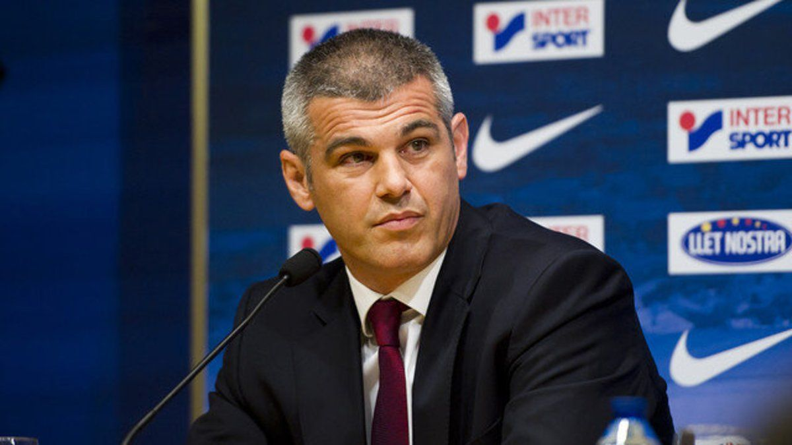

es un exbalonmanista español, considerado como uno de los mejores jugadores españoles de todos los tiempos. Ocupaba la demarcación de central y desarrolló la mayor parte de su carrera deportiva en el F.C. Barcelona (1990–2004). Fue internacional absoluto y capitán de España entre 1989 y 2003, totalizando 205 partidos y 656 goles. Participó en dos Juegos Olímpicos, seis Mundiales y tres Europeos.
